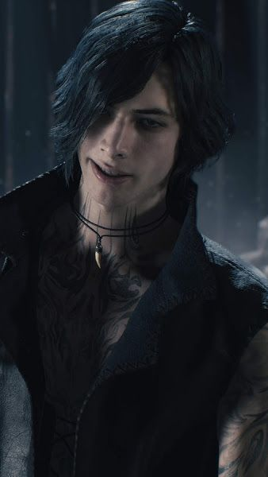
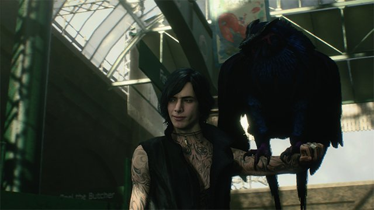
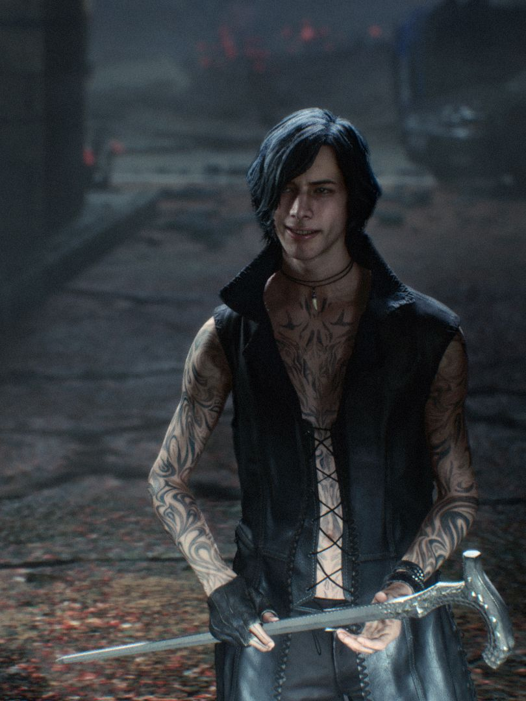
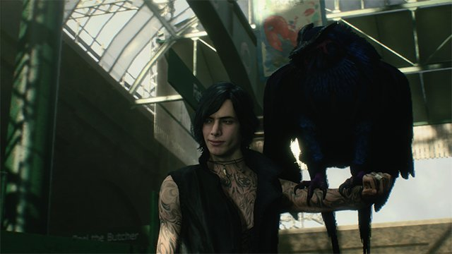
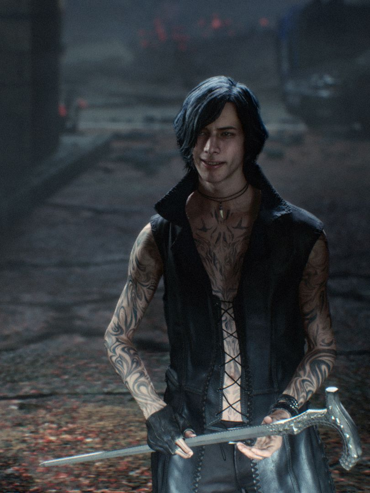
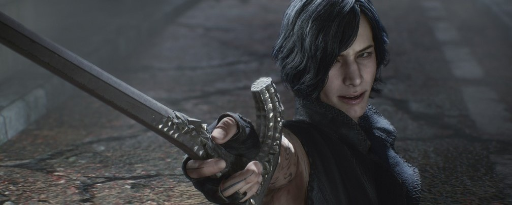

V
V é um dos protagonistas principais e o terceiro personagem jogável introduzido em Devil May Cry 5. Um humano com laços demoníacos, V se apresenta como o novo cliente de Dante para colocá-lo no rastro de Urizen e toma Nero como seguro de backup. É revelado mais tarde que V é, na verdade, a metade humana de Vergil.

Em Devil May Cry, Visões de V:
Logo após o nascimento de V, ele assistiu com medo intenso da manifestação de Urizen e tentou rastejar para longe, notando seu corpo frágil e falhou em tentar fortalecê-lo com o poder demoníaco. Embora totalmente ciente de que morrerá em breve, V admite para si mesmo que não queria morrer quando encontrou o livro de poemas de Vergil no chão, fazendo-o lembrar de sua infância feliz com Dante. Ouvindo os pensamentos de V, Griffon varreu V do chão e o levou para fora, deixando-o cair sobre uma pilha de lixo e dizendo a V para fazer um contrato com ele. Griffon meio que brincando e explicou como um contrato funciona para V, mas V ficou irritado com a voz de Griffon e mandou ele fechar o bico. V exigiu que Griffon se explicasse, que revelou a V que ele era as memórias descartadas do tempo de Vergil com Mundus que foram cortadas com Yamato. Griffon explicou a V que ele desaparecerá sem um hospedeiro, o que era parte do contrato de V a cumprir. Como o corpo de V também está se deteriorando e ele não pode voltar a ser Vergil sem o poder de derrotar a metade demônio, Griffon afirmou que os dois têm que trabalhar juntos ou morrerão.
V e Griffon param a conversa para ir para a cidade e tropeçam em um beco deserto onde encontraram um jovem punk assaltando um velho. Enquanto o punk focava sua atenção em V, Griffon ataca o punk por trás e o deixa inconsciente, permitindo que V roube as roupas do punk. Enquanto V se veste, Griffon recomeça a conversa, embora V questione por que ele precisaria de Griffon, irritando-o já que ele tem ajudado V a se mover e conseguir roupas para ele. No entanto, V esclareceu que estava planejando "usar" Griffon e expressou seu ceticismo sobre suas habilidades. Enquanto exasperado com o comportamento de V, Griffon concordou em provar a si mesmo para V, que disse a ele para matar o Empusa que se manifestou no beco. V então observou com uma expressão impassível como Griffon facilmente matou a Empusa com um ataque de raio, vangloriando-se para V se ele ainda pensa que não precisa dele.
V se perguntou se o aparecimento de Empusa na cidade é por causa de Urizen, ao qual Griffon confirmou e então afirmou que a Red Grave City provavelmente será infestada de demônios em breve, já que Urizen é muito poderoso e tem o Yamato. Enquanto Griffon repreende V por agir de forma arrogante quando ele nem consegue se proteger, V pegou seu livro de poesia e o enfiou na boca de Griffon apenas para silenciá-lo. Embora V não goste da ideia de se juntar a Griffon, ele concordou em trabalhar junto com ele porque não quer morrer. Enquanto os dois brigavam um com o outro, o Empusa se levantou do chão e atacou a dupla, para grande choque de Griffon. Griffon se esquiva de Empusa e levanta V no ar, questionando por que seu raio não o matou, ao que a resposta de V foi que Griffon não era forte o suficiente. Ao golpeá-lo novamente falhou, Griffon de repente fica sem poder demoníaco, fazendo com que sua forma se torne instável e deixando os dois de volta no chão, uma vez que Griffon foi incapaz de lutar, V invade uma loja de antiguidades próxima para se esconder enquanto arrasta Griffon para dentro com ele. O Empusa ataca V, o abatendo, mas Griffon chama sua atenção. V então refletiu sobre como é frustrante ser fraco e decidiu lutar também, quebrando uma caixa de vidro para recuperar a sua cana no processo, e apunhalou o Empusa por trás.
Depois de passar por um grande esforço, V foi capaz de matar o Empusa com sucesso, então ele desabou em um sofá próximo de exaustão. Enquanto limpava o sangue do demônio, V se perguntou por que ele foi capaz de matar o demônio, embora o ataque de Griffon foi capaz de feri-lo. V então especulou que era por causa da bengala, embora não se parecesse com um Braço do Diabo. Griffon explicou a V que não é a bengala, mas o próprio V. Griffon deduziu que, por ser essencialmente um "sonho" sem qualquer substância, é impossível para ele matar qualquer coisa, mas V pode e deve ser o único a desferir o golpe mortal depois de enfraquecer quaisquer grupos de inimigos vindouros no futuro. Como era preciso muito esforço para vencer um demônio de baixo nível, V duvidava que pudesse derrotar Urizen em seu estado atual, mas Griffon garantiu a V que não deveria "Não tenha vergonha, pois os dois são "patéticos" à sua maneira. Quando a forma de Griffon começa a derreter no chão e diz a V para fazer uma escolha rapidamente, V relutantemente aceitou o fato de que ele precisava de Griffon e colocou sua mão na forma derretida de Griffon para iniciar o contrato. Enquanto a forma de Griffon envolvia o corpo de V, Griffon se desculpou com V por sua atitude anterior e então prometeu não zombar mais dele, o que V divertidamente comentou que ele iria depenar Griffon se ele continuasse a fazer críticas a ele. Com o contrato concluído, V ganhou tatuagens na parte superior do tórax e braços enquanto Griffon recuperava sua forma adequada.
Algum tempo depois, V foi atormentado por uma memória da época de Vergil sendo torturado por Mundus, mas foi capaz de se recuperar, embora Griffon zombasse de sua expressão pálida. V foi então informado por Griffon que outra manifestação física das memórias de Vergil estava próxima e pediu a V que os encontrasse antes que desaparecessem. No entanto, V achou a tarefa problemática e relutou em encontrar mais "aborrecimentos", mas Griffon apontou que eles precisam urgentemente de mais aliados. Griffon explicou a V que mais três seres tomaram forma física depois que Vergil os expulsou. Embora alguns provavelmente sejam agressivos, Griffon acreditava que alguns deles estariam dispostos a firmar um contrato com V, já que não gostariam de morrer. Quando V perguntou se eles se recusariam a ajudar, Griffon disse que eles teriam que usar a força para domesticá-los. V avistou uma figura escura de forma humana na rua, fazendo com que Griffon se esconda atrás de V e tente fazer com que ele se livre da pessoa. A figura de repente transformou seu corpo e os atacou com uma grande ponta, mas V foi capaz de bloqueá-la com sua bengala. Quando a figura acabou se mostrando como Shadow (outra manifestação das memórias de Vergil), V questionou Griffon como eles deveriam se comunicar com Shadow já que ele não podia falar a linguagem humana.
Pegando sua bengala, V brinca com Phantom que Shadow era sua "presa" primeiro, enquanto Griffon explicava a V que Shadow estava em seu estado central e sua forma normal deveria retornar logo, já que ele não estava completamente sem energia ainda. No entanto, Griffon aconselhou V que eles deveriam lidar com Phantom antes de lidar com Shadow. Phantom reconhece V e Griffon, chamando o primeiro de seu "hospedeiro", já que Phantom era parte de Vergiltambém. V ficou em silêncio enquanto Griffon tentava fazer com que Phantom fizesse um contrato com ele, mas o arrogante Phantom assustadoramente proclamou que nunca servirá a um fracote como V, depreciando V com insultos, e afirmou que preferia morrer do que viver limitado por ele. Irritado com os insultos de Phantom, V provoca Phantom, dizendo que não precisa dele, fazendo com que o demônio o ataque. V e Griffon conseguiram se esquivar e se esconder atrás de uma grande pedra, arrastando o corpo inerte de Shadow com eles. Griffon repreendeu V por provocar Phantom, mas V, indiferente, comentou que a negociação pacífica era uma perda de tempo. Exasperado pela situação, Griffon disse que eles não podem lidar com Phantom e Shadow ao mesmo tempo, então V deve domar Shadow à força. Antes que V pudesse apunhalar Shadow com sua bengala, Shadow recuperou a consciência, atacando V e prendendo sua mandíbula na bengala. Enquanto Griffon tentava acalmar Shadow, V refletiu sobre sua interação com o Phantom e percebeu que é inútil exigir a cooperação de Shadow. Soltando sua bengala, V olhou diretamente nos olhos de Shadow e pediu-lhe para fazer uma escolha - morrer ou lutar e viver - e se Shadow escolher viver, então ele precisa de Shadow. Ganhando a cooperação de Shadow, V transformou Shadow em sua aparência e atraiu Phantom para perto o suficiente para que eles o atacassem. Quando o núcleo do Phantom foi exposto, V o esfaqueou com sua bengala, matando a aranha demoníaca. Enquanto Griffon apontou que eles perdem um aliado em potencial, V pelo menos ganhou Shadow como um familiar. Como uma demonstração de afeto, Shadow se lançou sobre V e lambeu seu rosto, para desgosto de V e diversão de Griffon.
Após um tempo, V encontra Nightmare e fica admirado com a criatura e diz que quer que ela faça parte da familia, Nightmare no começo batalha contra V, Shadow e Griffon, mas após algum tempo V o intimida com suas memórias e Nightmare acaba cedendo, assim criando mais uma tatuagem em V. V então pega o trem para a cidade (Red Grave City), e caça JD Morrison investigando bares que ele provavelmente frequenta, mas todas as pistas que ele recebeu acabaram sendo uma apreensão e foi atormentado por ladrões ao longo do caminho. Depois de lidar com três homens, V também fez uma pausa para comer um hambúrguer, embora não gostasse, pois não gostava de bagunçar as mãos. V questionou Griffon se ele realmente sabia onde encontrar Morrison, para o qual o pássaro demônio não tinha uma resposta real. Com sua última pista sendo Grue's Cellar, V esperava encontrar Morrison logo e que o dinheiro que coletou até agora será suficiente. Quando Griffon perguntou por que V estava passando por todos os problemas para encontrar Morrison quando ele já sabia onde ficava a loja de Dante, V explicou que deseja ocultar suas identidades tanto quanto possível. Enquanto continuava em sua busca, Griffon levantou a possibilidade do que eles farão se Dante não puder derrotar Urizen, fazendo com que V admita que ele não pensou sobre esse cenário. V observou que era o desejo de Vergil bater Dante e foi a razão pela qual V foi descartado em primeiro lugar, mas V proclamou que ele tem mais medo de morrer do que qualquer outra coisa e tinha fé que Dante não perderia. De repente, um homem apareceu e segurou uma faca no pescoço de V e tentou roubá-lo, mas V permaneceu imperturbável enquanto Griffon rapidamente lidava com o homem. Achando Grue's Cellar, V contemplou o que aconteceria se Dante perdesse e pensasse em Nero, que ficou gravemente ferido depois que Vergil levou seu Devil Bringer. No entanto, V dispensou Nero e acreditou que ele era muito fraco como um plano alternativo em comparação com Dante.
Em Devil May Cry, Antes do Pesadelo:
Sabendo que a ressurreição de Urizen está se aproximando, V vai para Grue's Celler encontrar JD Morrison, a fim de entrar em contato com Dante. Antes de entrar no bar, V agrediu um homem aleatório com Griffon a fim de obter dinheiro para pagar os serviços de Dante. Ao conhecer Morrison, V pediu-lhe que o levasse a Dante e lhe entregasse o dinheiro manchado de sangue. Embora desconfiado de V e Griffon, Morrison aceita o pagamento, especialmente por querer que V e Griffon não machuquem mais pessoas apenas para coletar mais dinheiro e os leva para Devil May Cry. Na loja, V esperou fora do escritório com Griffon enquanto Morrison falava primeiro com Dante. Griffon questionou se V estava nervoso ao conhecer seu "irmão" pela primeira vez em anos e comentou que Dante não deveria ser capaz de reconhecer V como Vergil, mas o encorajou a agir diferente de Vergil apenas no caso, sugerindo que V contasse uma piada antes. Assim que entrou na loja, V se apresentou a Dante e explicou que deseja que ele pare um poderoso demônio que está prestes a ser ressuscitado em Red Grave City. Enquanto Dante está confiante de que o trabalho de V seria fácil, V afirmou a Dante que este demônio é muito diferente dos outros que ele lutou antes porque o demônio é a "razão para lutar" de Dante. A revelação de V fez com que Dante ficasse em um silêncio atordoado, dando tempo para V ponderar sobre a reação de Dante. Quando Dante mostrou uma reação furiosa e deixou escapar sua aura demoníaca, V estava secretamente exultante, embora assustado pela forte reação de Dante, satisfeito por Dante não ter mudado desde que derrotou Vergil anos atrás. V calmamente explicou a Dante que ele não se importava se duvidasse dele, porque uma vez que Red Grave City seja demonizada, ele saberá a verdade. À menção de sua antiga casa, V viu que Dante já estava começando a acreditar nele e o avisou que a cidade estaria em perigo em breve, então Dante deveria ficar de olho nas notícias. Quando V deu as costas a Dante, V ficou satisfeito como Dante estava sendo atraído, mas o humor de V azedou rapidamente quando viu a foto de Eva na mesa de Dante.
Poucos dias depois, Morrison forneceu um helicóptero para levar V e Dante a Trish e Lady. Ao chegar dentro da árvore de Qliphoth, V espera atacar Urizen antes que ele seja totalmente ressuscitado, mas percebeu que Urizen havia acordado enquanto eles estavam subindo na árvore. Percebendo como V estava olhando para Trish, Griffon falou telepaticamente com V, preocupando-se se Dante e as meninas os matariam se descobrissem a verdade. Griffon também lembrou a V que ele deve dar o golpe mortal em Urizen antes de Dante. De repente, V sente o poder demoníaco de Urizen, espantado e assustado com o quão mais forte ele se tornou desde a separação deles, e alucinou uma visão de crânios parecidos com lesmas o assombrando. Aflito, V percebeu que Urizen era muito mais forte que Dante e seu plano provavelmente iria falhar. Quando V expressou abertamente suas preocupações sobre a situação, Dante ordenou que ele fosse embora, acreditando que ele seria um "peso morto" se ele não pudesse lidar com a missão. Embora frustrado com o comentário de Dante, V pragmaticamente obedeceu às palavras de Dante, para grande choque de Griffon. Inseguro sobre as chances de seus aliados derrotar Urizen, V quer ter Nero como "seguro", apesar de saber que o braço Devil Bringer de Nero foi recentemente arrancado. Usando o helicóptero, V rapidamente chegou a Fortuna e encontrou Nero no hospital assim que ele acordou do coma. Depois de se apresentar, V explicou a Nero que foi Urizen que roubou seu braço e ele contratou Dante para subjugá-lo. V pediu a Nero para se juntar a eles e o incita apontando o orgulho ferido de Nero. Embora Nero suspeitasse de V, Nero concordou em ajudá-lo a recuperar o braço.
Depois de pegar o equipamento de Nero, V e Nero voltam para a árvore Qliphoth e avistam Dante lutando contra Urizen à distância. V advertiu Nero para não subestimar Urizen, já que ele ganhou muito poder após tomar seu Devil Bringer. V foi à frente de Nero, usando a habilidade de Shadow para se carregar, já que se mover estava se tornando mais difícil para V devido ao seu corpo em decomposição. V e seus familiares lidaram com demônios vindos da árvore para tornar as coisas mais fáceis para Nero. Uma vez que Nero os alcançou, V disse a ele para ir em frente e deixar os outros demônios com ele. Quando V e Griffon chegaram à sala do trono de Urizen, V viu Nero e Dante lutando para vencer Urizen quando o chão começou a tremer. Dante gritou para eles correrem enquanto ele segurava Urizen, embora V tivesse que arrastar Nero que queria ficar, para fora da caverna. Quando os destroços bloquearam o caminho para Urizen, os dois se encontraram com Morrison e lhe contaram o que aconteceu quando tentáculos começaram a brotar do grupo e atacar as pessoas. Enquanto Nero queria lutar, V exigiu que ele recuasse, V encorajou Morrison a não perder a esperança e Nero a ficar mais forte, já que ele é a única pessoa que pode derrotar Urizen além de Dante. V e Nero concordaram em se encontrar novamente em um mês, com Nero retornando a Fortuna para treinar. V optou por ficar em Red Grave City, mentindo para Nero que ele estará coletando informações enquanto isso.

Com o passar dos dias, V observou a árvore Qliphoth crescendo mais e mais por causa do sangue humano. Griffon então sugeriu que V deveria evacuar a cidade para desacelerar o crescimento de Qliphoth, mas V rejeitou a ideia porque ele não acreditava que alguém iria ouvi-lo e ele não tinha autoridade ou tempo para organizar uma evacuação por toda a cidade. Enquanto V tentava seu melhor dentro de suas capacidades, ele sentiu grande pesar por não ser capaz de fazer mais. Quando Griffon questionou se Nero retornará, V comentou que Nero não é do tipo que aceita uma "sequência de derrotas", fazendo com que Griffon se divertisse com uma piada sobre de onde Nero herdou essa atitude. V contemplou seu amado livro de poemas, que ecoa a natureza da Qliphoth. V amargamente lembrou de seu antigo corpo e teve delírios sobre como ele mentiu para Nero, já que ele já sabia tudo sobre Urizen. Embora ele quisesse evitar muitos movimentos já que seu corpo estava erodindo, V resolveu ajudar os humanos e minimizar os danos o máximo possível até que Nero retornasse.
Em Devil May Cry 5:
Depois de passado um mês, V ligou para Nero para definir um local de encontro para que planejassem seu próximo movimento. V chegou ao ponto de encontro no momento em que Nero estava terminando de lutar contra Golias. V usa Shadow no enfraquecido Golias e desferiu o golpe final antes que Nero pudesse matá-lo. Depois de brincar um pouco, Nero perguntou se ele sabia se Dante ainda estava vivo na árvore Qliphoth. V calmamente afirmou que se Dante ainda estivesse lá, ele provavelmente seria pólen de Qliphoth agora e explicou o que Qliphoth faz a Nero. Enquanto Nero quer ir direto para a árvore para salvar Dante, V o interrompe e informa que eles devem cuidar das raízes Qliphoth primeiro. Quando Nico chegou no trailer Devil May Cry, V a encontra pela primeira vez e entrou para planejar seu próximo movimento. V e Nero concordaram em se dividir para cobrir mais terreno e se encontrar na base da árvore Qliphoth. V então silenciosamente observou como Nico discutia com Nero e Griffon antes de partir.
Nas ruas, Griffon questionou V se ele acreditava que Nero poderia derrotar Urizen, mas V afirmou que eles só podem esperar que Nero consiga. Um enxame de Empusa logo apareceu diante de V e seus bichos, com Shadow pronto para lutar e Griffon querendo que V fugisse devido à sua condição frágil. No entanto, V escolhe lutar e destruir o máximo de raízes Qliphoth que puder. Eventualmente, V encontrou Nidhogg e rapidamente lidou com ele. Logo depois, V notou o gigantesco Gilgamesh e decidiu deixá-lo sozinho, sabendo que estava além de suas capacidades atuais. No entanto, Gilgamesh avistou V e o atacou, mergulhando-o nos túneis subterrâneos da cidade. Enquanto V destruía mais raízes Qliphoth em seu caminho para fora, V atacou as pernas de Gilgamesh que se projetavam do teto acima. V rapidamente esbarrou em Nero, que estava lutando contra Gilgamesh na superfície, e disse a ele que deixaria Nero para lidar com Gilgamesh. Ao retornar à superfície, V espiou Cavaliere Angelo sendo ordenado por Malphas, que é o segundo em comando de Urizen, para encontrar a espada de Sparda e destruí-lo. Depois que Malphas partiu, V confrontou o Cavaliere Angelo, expressando reconhecimento dele e zombeteiramente prometeu ser "gentil" com ele. Enquanto V foi capaz de matar Elder Geryon que Cavaliere Angelo cavalgava, Cavaliere Angelo escapou de V devido a se cansar. V logo desejou encontrar o Sparda Devil Arm para aumentar suas chances de derrotar Urizen. Quando Griffon apontou que V não era forte o suficiente para empunhar a espada, V afirmou que Nero poderia ser capaz de fazer isso. Percebendo um fragmento do Ancião Geryon no chão, V o pegou e voltou para o RV.
V entrou no trailer assim que Lady foi resgatada anteriormente por Nero, estava contando aos outros o que aconteceu depois que ele e Nero deixaram a árvore um mês atrás. V educadamente cumprimentou Lady e entregou a Nico o fragmento de demônio para fazer um novo Devil Breaker para Nero. Como a estrada para a árvore Qliphoth estava bloqueada por destroços, V e Nero decidiram fazer o resto do caminho a pé. Enquanto eles seguiam por caminhos subterrâneos diferentes, V e Nero se encontraram novamente na superfície e foram confrontados por um Proto Angelo e um pequeno exército de Scudo Angelos. Recordando o tempo de Vergil como Nelo Angelo, V ficou zangado ao ver os Angelos e começou a batalhar ao lado de Nero em seu campo de batalha em movimento. V e Nero terminaram a luta antes que sua plataforma caísse em um penhasco, aterrissando em uma área que V reconheceu ser onde a antiga casa da família de Vergil e Dante residia. V nostalgicamente e cripticamente compartilhou suas memórias de infância com Nero antes de declarar que eles deveriam se separar porque V queria encontrar a espada de Sparda. Enquanto Nero avisou V que a espada seria demais para V manusear, V encolheu os ombros e disse que eles precisam de toda a ajuda que puderem, para a perplexidade de Nero.
V enviou Griffon para explorar a área e, ao ouvir seus relatos de demônios próximos "dançando", percebeu que a espada de Sparda estava por perto. Depois de lutar contra um Behemoth e outros demônios menores, V sentiu a presença da espada e foi levado a um grupo de Nobodies, V zomba deles e, depois de lidar com eles, V recuperou a espada e tentou levantá-la, apenas para falhar. Enquanto Griffon brincava com ele, V acreditava que Nero era o único que poderia empunhá-lo assim que Shadow alertou V para um achado afortunado - um Dante em coma, cuja presença tinha sido escondida pela espada. Embora inicialmente aliviado ao ver Dante, V foi dominado pela raiva e tentou esfaquear Dante com Sparda, ignorando os apelos de Griffon para sair de seu transe. No entanto, V apenas tentou esfaquear Sparda perto da cabeça de Dante, o que foi capaz de chocar os instintos de Dante o suficiente para acordá-lo de seu coma.
Quando Dante comentou que acreditava que V iria apunhalá-lo, V explicou que esfaquear ou pelo menos tentar esfaqueá-lo era a única maneira de acordá-lo, já que Dante poderia ser "teimoso". V atualizou Dante sobre o fato de que ele está em coma há um mês e Nero estava a caminho de lutar contra Urizen novamente enquanto eles conversavam. Dante exigiu que V deixasse Nero fora de sua missão, mas V respondeu que se Dante pudesse vencer Urizen sozinho, então ele nunca teria que usar Nero. V lamentou como Nero foi inútil durante sua primeira tentativa em Urizen, mas Dante o interrompeu e começou a partir. V tentou parar Dante, mas caiu no chão e percebeu que seu corpo estava começando a se deteriorar. Embora tenha se tornado mais difícil mover seu corpo, V correu atrás de Dante e finalmente o alcançou. V enviou Griffon para seguir Dante enquanto ele ficava para trás para cuidar de Trish e ler seu livro até que ela acordasse. Quando Trish começou a fazer perguntas sobre as origens de Urizen e a identidade de V, V explicou a Trish sobre seu nascimento e a verdade de Urizen. V disse a Trish que busca consertar os erros de "Vergil" e perguntou se ele era tolo por pensar que Dante poderia ajudá-lo a expiar, aparentemente procurando por Trish uma garantia maternal devido à sua semelhança com Eva. No entanto, Trish não respondeu à sua pergunta e disse-lhe que ele tinha o dever de ver a guerra de Dante até o fim.
V e Trish viajaram para a árvore Qliphoth, mas quando o solo começou a subir devido à Qliphoth completar sua emergência no Mundo Humano, V quase caiu de um penhasco se não fosse por Trish agarrando sua mão. Na base da Qliphoth, V e Trish se reuniram com Dante e seus outros aliados. V explicou a Dante que Urizen estava no topo da árvore e insistiu que ele permitisse que Nero se juntasse a eles já que seu tempo estava acabando. No entanto, Dante decretou que os três deveriam seguir caminhos separados e partir antes que V ou Nero pudessem intervir. V luta seu caminho através da árvore e brevemente encontrou Dante e Nero no caminho, apenas para eles se separarem depois que o chão desabou. V fez com que Griffon diminuísse sua descida e o carregou por um curto período de tempo antes que ele se exaurisse.
Embora seu corpo continuasse a desmoronar lentamente e o movimento se tornasse mais difícil, V estava severamente determinado a ir até a localização de Urizen. V se deparou com uma área com rochas estranhas, que o privou de seus familiares e o deixou inconsciente, e foi emboscado pelas ilusões de Malphas. Malphas jogou V em aviões de bolso do Mundo Demoníaco, que ele surpreendentemente descobriu que estava curando seu corpo. V foi forçado a recuperar seus familiares um por um e lutar contra miragens de Golias, Ártemis e Cavaliere Angelo. Ao sair do aviãozinho, V logo encontrou Malphas novamente, mas reconheceu que não tinha forças para lutar contra ela. Enquanto tentava descobrir uma maneira de passar por ela, ele acidentalmente alertou Malphas de sua presença e se encolheu de medo, mas foi salvo pela chegada oportuna de Nero. Enquanto Nero lutava com ela, V jogou para Nero alguns Devil Breakers que ele estava segurando para que ele pudesse ter uma chance melhor de lutar contra Malphas. Depois de derrotar o demônio, V agradeceu a Nero por sua ajuda e tentou prosseguir para a localização de Urizen. Vendo como o corpo de V estava se deteriorando, Nero disse para ele descansar um pouco, mas V implorou a Nero para levá-lo a Urizen como seu último pedido, o qual ele relutantemente concordou. Enquanto eles avançavam, V revelou a Nero que Urizen era realmente o irmão mais velho de Dante, Vergil, para grande choque de Nero. Quando Nero questionou por que os irmãos lutariam, V explicou que era porque eles discordavam sobre sua razão de existir e lutavam entre si para aderir às suas próprias crenças, embora Nero achasse tudo ridículo.
Após a vitória de Dante contra Urizen, V e Nero chegaram à cena e V finalmente decidiu servir a seu próprio propósito para confrontar Urizen em seu estado enfraquecido. Enquanto Dante o advertia para fugir, V disse a ele que queria terminar a luta com suas próprias mãos. Escalando em cima do peito de Urizen, V aconselhou Urizen a não lutar, pois ele já havia perdido, que apenas proclamou seu desejo de ter mais poder. V afirmou que embora ele e Urizen tivessem perdido um ao outro, eles estão conectados por aquele único sentimento. Quando ele começou a recitar o poema "Love & Harmony" de William Blake (relacionado à relação entre V e Urizen), V esfaqueou Urizen com sua bengala antes que Dante pudesse detê-lo.
Após o breve confronto de Dante com Vergil, V foi mencionado por Nero quando ele perguntou o que aconteceu a V, ao que Dante o informou que V havia se reunido com Urizen e se transformado em Vergil, e durante a batalha final entre Nero e Vergil como pai e filho. Depois de todo o incidente, as únicas coisas que V deixou para trás foram seus familiares, que optaram por não se fundir de volta e morreram lutando contra as mãos de Dante. Após a luta de Vergil com Nero, ele deu o livro de poesia de V para Nero. De acordo com Matt Walker, a habilidade do Mundo de V de Vergil representa que o próprio V ainda é tecnicamente parte de Vergil, ao invés de ele desaparecer completamente no eu de Vergil após sua reunião com Urizen.
 V veste um casaco de couro sem mangas comprido e aberto, com as laterais amarradas por cordões, nos bolsos internos e um colete costurado em forma de espartilho na frente. Ele também usa calças pretas com uma corrente de prata feita de caveiras no lado direito do cinto e uma luva sem dedos na mão direita. V ostenta muitos acessórios, incluindo um pingente de dente em volta do pescoço, um anel de prata em seu dedo médio esquerdo e uma pulseira com pontas que se cruza em torno de seu pulso esquerdo. Ao contrário da maioria dos personagens da série, V usa sandálias pretas em vez de botas. V carrega uma bengala de metal prateado, que serve como arma e ferramenta de apoio, já que seu corpo em decadência lenta dificultando seu movimento, e um livro marrom bordado a ouro, contendo poemas de William Blake, com um grande "V" insígnia na capa.
Quando ele foi separado de Vergil ao se esfaquear com Yamato, ele estava nu e coberto por uma névoa roxa enquanto toda a parte superior de seu corpo e seu pescoço em tatuagens pretas foram formados rapidamente.
Na segunda metade do jogo, a condição de deterioração de V fez com que sua pele se tornasse escamosa e fissuras se formassem gradualmente em sua pele, mostrando que ele estava literalmente desmoronando. Nesse estado, ele mal conseguia se manter de pé, mesmo com sua bengala, e exigiu que Nero o arrastasse para as câmaras mais baixas da Qliphoth.
Um traço distintivo de V é seu gosto extremo pela poesia, já que ele frequentemente recita versos ao falar com pessoas ou até inimigos, e muitas vezes apenas de memória, a ponto de Griffon o chamar de "Shakespeare" em um ponto do jogo. V valorizava muito seu livro de poemas, pois seu eu original, Vergil, o possuía desde que era um menino. Mantendo-se alinhado com a personalidade de seu eu original, V tem um senso de humor seco e não deixa de fazer piadas ou achar graça em suas travessuras.
Sendo a metade humana que Vergil, V está mais em contato com suas emoções e é introspectivo. V muitas vezes reflete sobre seu "eu passado", como lembrar o quão orgulhoso ele era no passado e era do tipo que fica irritado por ser chamado de "peso morto". Ele considerou Urizen cheio de "delírios" enquanto expressava pesar por suas próprias ações também. Ao contrário do Vergil que vimos, que despreza os humanos, sua metade humana, V, demonstrou respeitar os humanos e acredita que sua tenacidade para nunca desistir é sua melhor qualidade.
Por estar ciente de seus limites e capacidades, V demonstrou ser pragmático e cauteloso na forma como aborda as situações. Embora confiante em suas habilidades, V é capaz de dizer quando uma luta com certos demônios seria demais para ele lidar e se afastaria ou deixaria outra pessoa para lidar. Enquanto V está disposto a fazer coisas moralmente questionáveis e até mesmo mentir e manipular seus aliados, V possuía um desejo genuíno de salvar o mundo de Urizen e ajudar a humanidade, mesmo ao custo de sua própria saúde debilitante.
Biografia
Depois de ser libertado do controle de Mundus, Vergil foi capaz de escapar do Mundo Demoníaco, mas seu corpo estava enfraquecido e se desintegrando de batalha após batalha. Depois de pegar o Devil Bringer de Nero, a fim de recuperar a Yamato, Vergil, em seguida, voltou para a mansão queimada de sua família em Red Grave City. Alimentado por seu desejo de derrotar seu irmão gêmeo Dante e por poder sem ter que ser impedido pelo pensamento ou emoção humana, Vergil se apunhalou com Yamato para separar sua metade humana de sua metade demônio, dando início ao nascimento de "V" e "Urizen". Apenas alguns segundos após seu nascimento, V foi capaz de reter a consciência e testemunhou a formação horrível de Urizen. Além de ser humanamente fraco, V também ficou com quatro manifestações físicas do trauma de Vergil de seu tempo como Nelo Angelo, assumindo as formas baseadas nos asseclas de Mundus - Griffon, Shadow, Nightmare, Phantom.
Em Devil May Cry, Visões de V:
Logo após o nascimento de V, ele assistiu com medo intenso da manifestação de Urizen e tentou rastejar para longe, notando seu corpo frágil e falhou em tentar fortalecê-lo com o poder demoníaco. Embora totalmente ciente de que morrerá em breve, V admite para si mesmo que não queria morrer quando encontrou o livro de poemas de Vergil no chão, fazendo-o lembrar de sua infância feliz com Dante. Ouvindo os pensamentos de V, Griffon varreu V do chão e o levou para fora, deixando-o cair sobre uma pilha de lixo e dizendo a V para fazer um contrato com ele. Griffon meio que brincando e explicou como um contrato funciona para V, mas V ficou irritado com a voz de Griffon e mandou ele fechar o bico. V exigiu que Griffon se explicasse, que revelou a V que ele era as memórias descartadas do tempo de Vergil com Mundus que foram cortadas com Yamato. Griffon explicou a V que ele desaparecerá sem um hospedeiro, o que era parte do contrato de V a cumprir. Como o corpo de V também está se deteriorando e ele não pode voltar a ser Vergil sem o poder de derrotar a metade demônio, Griffon afirmou que os dois têm que trabalhar juntos ou morrerão.
V e Griffon param a conversa para ir para a cidade e tropeçam em um beco deserto onde encontraram um jovem punk assaltando um velho. Enquanto o punk focava sua atenção em V, Griffon ataca o punk por trás e o deixa inconsciente, permitindo que V roube as roupas do punk. Enquanto V se veste, Griffon recomeça a conversa, embora V questione por que ele precisaria de Griffon, irritando-o já que ele tem ajudado V a se mover e conseguir roupas para ele. No entanto, V esclareceu que estava planejando "usar" Griffon e expressou seu ceticismo sobre suas habilidades. Enquanto exasperado com o comportamento de V, Griffon concordou em provar a si mesmo para V, que disse a ele para matar o Empusa que se manifestou no beco. V então observou com uma expressão impassível como Griffon facilmente matou a Empusa com um ataque de raio, vangloriando-se para V se ele ainda pensa que não precisa dele.
V se perguntou se o aparecimento de Empusa na cidade é por causa de Urizen, ao qual Griffon confirmou e então afirmou que a Red Grave City provavelmente será infestada de demônios em breve, já que Urizen é muito poderoso e tem o Yamato. Enquanto Griffon repreende V por agir de forma arrogante quando ele nem consegue se proteger, V pegou seu livro de poesia e o enfiou na boca de Griffon apenas para silenciá-lo. Embora V não goste da ideia de se juntar a Griffon, ele concordou em trabalhar junto com ele porque não quer morrer. Enquanto os dois brigavam um com o outro, o Empusa se levantou do chão e atacou a dupla, para grande choque de Griffon. Griffon se esquiva de Empusa e levanta V no ar, questionando por que seu raio não o matou, ao que a resposta de V foi que Griffon não era forte o suficiente. Ao golpeá-lo novamente falhou, Griffon de repente fica sem poder demoníaco, fazendo com que sua forma se torne instável e deixando os dois de volta no chão, uma vez que Griffon foi incapaz de lutar, V invade uma loja de antiguidades próxima para se esconder enquanto arrasta Griffon para dentro com ele. O Empusa ataca V, o abatendo, mas Griffon chama sua atenção. V então refletiu sobre como é frustrante ser fraco e decidiu lutar também, quebrando uma caixa de vidro para recuperar a sua cana no processo, e apunhalou o Empusa por trás.
Depois de passar por um grande esforço, V foi capaz de matar o Empusa com sucesso, então ele desabou em um sofá próximo de exaustão. Enquanto limpava o sangue do demônio, V se perguntou por que ele foi capaz de matar o demônio, embora o ataque de Griffon foi capaz de feri-lo. V então especulou que era por causa da bengala, embora não se parecesse com um Braço do Diabo. Griffon explicou a V que não é a bengala, mas o próprio V. Griffon deduziu que, por ser essencialmente um "sonho" sem qualquer substância, é impossível para ele matar qualquer coisa, mas V pode e deve ser o único a desferir o golpe mortal depois de enfraquecer quaisquer grupos de inimigos vindouros no futuro. Como era preciso muito esforço para vencer um demônio de baixo nível, V duvidava que pudesse derrotar Urizen em seu estado atual, mas Griffon garantiu a V que não deveria "Não tenha vergonha, pois os dois são "patéticos" à sua maneira. Quando a forma de Griffon começa a derreter no chão e diz a V para fazer uma escolha rapidamente, V relutantemente aceitou o fato de que ele precisava de Griffon e colocou sua mão na forma derretida de Griffon para iniciar o contrato. Enquanto a forma de Griffon envolvia o corpo de V, Griffon se desculpou com V por sua atitude anterior e então prometeu não zombar mais dele, o que V divertidamente comentou que ele iria depenar Griffon se ele continuasse a fazer críticas a ele. Com o contrato concluído, V ganhou tatuagens na parte superior do tórax e braços enquanto Griffon recuperava sua forma adequada.
Algum tempo depois, V foi atormentado por uma memória da época de Vergil sendo torturado por Mundus, mas foi capaz de se recuperar, embora Griffon zombasse de sua expressão pálida. V foi então informado por Griffon que outra manifestação física das memórias de Vergil estava próxima e pediu a V que os encontrasse antes que desaparecessem. No entanto, V achou a tarefa problemática e relutou em encontrar mais "aborrecimentos", mas Griffon apontou que eles precisam urgentemente de mais aliados. Griffon explicou a V que mais três seres tomaram forma física depois que Vergil os expulsou. Embora alguns provavelmente sejam agressivos, Griffon acreditava que alguns deles estariam dispostos a firmar um contrato com V, já que não gostariam de morrer. Quando V perguntou se eles se recusariam a ajudar, Griffon disse que eles teriam que usar a força para domesticá-los. V avistou uma figura escura de forma humana na rua, fazendo com que Griffon se esconda atrás de V e tente fazer com que ele se livre da pessoa. A figura de repente transformou seu corpo e os atacou com uma grande ponta, mas V foi capaz de bloqueá-la com sua bengala. Quando a figura acabou se mostrando como Shadow (outra manifestação das memórias de Vergil), V questionou Griffon como eles deveriam se comunicar com Shadow já que ele não podia falar a linguagem humana.
Pegando sua bengala, V brinca com Phantom que Shadow era sua "presa" primeiro, enquanto Griffon explicava a V que Shadow estava em seu estado central e sua forma normal deveria retornar logo, já que ele não estava completamente sem energia ainda. No entanto, Griffon aconselhou V que eles deveriam lidar com Phantom antes de lidar com Shadow. Phantom reconhece V e Griffon, chamando o primeiro de seu "hospedeiro", já que Phantom era parte de Vergiltambém. V ficou em silêncio enquanto Griffon tentava fazer com que Phantom fizesse um contrato com ele, mas o arrogante Phantom assustadoramente proclamou que nunca servirá a um fracote como V, depreciando V com insultos, e afirmou que preferia morrer do que viver limitado por ele. Irritado com os insultos de Phantom, V provoca Phantom, dizendo que não precisa dele, fazendo com que o demônio o ataque. V e Griffon conseguiram se esquivar e se esconder atrás de uma grande pedra, arrastando o corpo inerte de Shadow com eles. Griffon repreendeu V por provocar Phantom, mas V, indiferente, comentou que a negociação pacífica era uma perda de tempo. Exasperado pela situação, Griffon disse que eles não podem lidar com Phantom e Shadow ao mesmo tempo, então V deve domar Shadow à força. Antes que V pudesse apunhalar Shadow com sua bengala, Shadow recuperou a consciência, atacando V e prendendo sua mandíbula na bengala. Enquanto Griffon tentava acalmar Shadow, V refletiu sobre sua interação com o Phantom e percebeu que é inútil exigir a cooperação de Shadow. Soltando sua bengala, V olhou diretamente nos olhos de Shadow e pediu-lhe para fazer uma escolha - morrer ou lutar e viver - e se Shadow escolher viver, então ele precisa de Shadow. Ganhando a cooperação de Shadow, V transformou Shadow em sua aparência e atraiu Phantom para perto o suficiente para que eles o atacassem. Quando o núcleo do Phantom foi exposto, V o esfaqueou com sua bengala, matando a aranha demoníaca. Enquanto Griffon apontou que eles perdem um aliado em potencial, V pelo menos ganhou Shadow como um familiar. Como uma demonstração de afeto, Shadow se lançou sobre V e lambeu seu rosto, para desgosto de V e diversão de Griffon.
Após um tempo, V encontra Nightmare e fica admirado com a criatura e diz que quer que ela faça parte da familia, Nightmare no começo batalha contra V, Shadow e Griffon, mas após algum tempo V o intimida com suas memórias e Nightmare acaba cedendo, assim criando mais uma tatuagem em V. V então pega o trem para a cidade (Red Grave City), e caça JD Morrison investigando bares que ele provavelmente frequenta, mas todas as pistas que ele recebeu acabaram sendo uma apreensão e foi atormentado por ladrões ao longo do caminho. Depois de lidar com três homens, V também fez uma pausa para comer um hambúrguer, embora não gostasse, pois não gostava de bagunçar as mãos. V questionou Griffon se ele realmente sabia onde encontrar Morrison, para o qual o pássaro demônio não tinha uma resposta real. Com sua última pista sendo Grue's Cellar, V esperava encontrar Morrison logo e que o dinheiro que coletou até agora será suficiente. Quando Griffon perguntou por que V estava passando por todos os problemas para encontrar Morrison quando ele já sabia onde ficava a loja de Dante, V explicou que deseja ocultar suas identidades tanto quanto possível. Enquanto continuava em sua busca, Griffon levantou a possibilidade do que eles farão se Dante não puder derrotar Urizen, fazendo com que V admita que ele não pensou sobre esse cenário. V observou que era o desejo de Vergil bater Dante e foi a razão pela qual V foi descartado em primeiro lugar, mas V proclamou que ele tem mais medo de morrer do que qualquer outra coisa e tinha fé que Dante não perderia. De repente, um homem apareceu e segurou uma faca no pescoço de V e tentou roubá-lo, mas V permaneceu imperturbável enquanto Griffon rapidamente lidava com o homem. Achando Grue's Cellar, V contemplou o que aconteceria se Dante perdesse e pensasse em Nero, que ficou gravemente ferido depois que Vergil levou seu Devil Bringer. No entanto, V dispensou Nero e acreditou que ele era muito fraco como um plano alternativo em comparação com Dante.
Em Devil May Cry, Antes do Pesadelo:
Sabendo que a ressurreição de Urizen está se aproximando, V vai para Grue's Celler encontrar JD Morrison, a fim de entrar em contato com Dante. Antes de entrar no bar, V agrediu um homem aleatório com Griffon a fim de obter dinheiro para pagar os serviços de Dante. Ao conhecer Morrison, V pediu-lhe que o levasse a Dante e lhe entregasse o dinheiro manchado de sangue. Embora desconfiado de V e Griffon, Morrison aceita o pagamento, especialmente por querer que V e Griffon não machuquem mais pessoas apenas para coletar mais dinheiro e os leva para Devil May Cry. Na loja, V esperou fora do escritório com Griffon enquanto Morrison falava primeiro com Dante. Griffon questionou se V estava nervoso ao conhecer seu "irmão" pela primeira vez em anos e comentou que Dante não deveria ser capaz de reconhecer V como Vergil, mas o encorajou a agir diferente de Vergil apenas no caso, sugerindo que V contasse uma piada antes. Assim que entrou na loja, V se apresentou a Dante e explicou que deseja que ele pare um poderoso demônio que está prestes a ser ressuscitado em Red Grave City. Enquanto Dante está confiante de que o trabalho de V seria fácil, V afirmou a Dante que este demônio é muito diferente dos outros que ele lutou antes porque o demônio é a "razão para lutar" de Dante. A revelação de V fez com que Dante ficasse em um silêncio atordoado, dando tempo para V ponderar sobre a reação de Dante. Quando Dante mostrou uma reação furiosa e deixou escapar sua aura demoníaca, V estava secretamente exultante, embora assustado pela forte reação de Dante, satisfeito por Dante não ter mudado desde que derrotou Vergil anos atrás. V calmamente explicou a Dante que ele não se importava se duvidasse dele, porque uma vez que Red Grave City seja demonizada, ele saberá a verdade. À menção de sua antiga casa, V viu que Dante já estava começando a acreditar nele e o avisou que a cidade estaria em perigo em breve, então Dante deveria ficar de olho nas notícias. Quando V deu as costas a Dante, V ficou satisfeito como Dante estava sendo atraído, mas o humor de V azedou rapidamente quando viu a foto de Eva na mesa de Dante.
Poucos dias depois, Morrison forneceu um helicóptero para levar V e Dante a Trish e Lady. Ao chegar dentro da árvore de Qliphoth, V espera atacar Urizen antes que ele seja totalmente ressuscitado, mas percebeu que Urizen havia acordado enquanto eles estavam subindo na árvore. Percebendo como V estava olhando para Trish, Griffon falou telepaticamente com V, preocupando-se se Dante e as meninas os matariam se descobrissem a verdade. Griffon também lembrou a V que ele deve dar o golpe mortal em Urizen antes de Dante. De repente, V sente o poder demoníaco de Urizen, espantado e assustado com o quão mais forte ele se tornou desde a separação deles, e alucinou uma visão de crânios parecidos com lesmas o assombrando. Aflito, V percebeu que Urizen era muito mais forte que Dante e seu plano provavelmente iria falhar. Quando V expressou abertamente suas preocupações sobre a situação, Dante ordenou que ele fosse embora, acreditando que ele seria um "peso morto" se ele não pudesse lidar com a missão. Embora frustrado com o comentário de Dante, V pragmaticamente obedeceu às palavras de Dante, para grande choque de Griffon. Inseguro sobre as chances de seus aliados derrotar Urizen, V quer ter Nero como "seguro", apesar de saber que o braço Devil Bringer de Nero foi recentemente arrancado. Usando o helicóptero, V rapidamente chegou a Fortuna e encontrou Nero no hospital assim que ele acordou do coma. Depois de se apresentar, V explicou a Nero que foi Urizen que roubou seu braço e ele contratou Dante para subjugá-lo. V pediu a Nero para se juntar a eles e o incita apontando o orgulho ferido de Nero. Embora Nero suspeitasse de V, Nero concordou em ajudá-lo a recuperar o braço.
Depois de pegar o equipamento de Nero, V e Nero voltam para a árvore Qliphoth e avistam Dante lutando contra Urizen à distância. V advertiu Nero para não subestimar Urizen, já que ele ganhou muito poder após tomar seu Devil Bringer. V foi à frente de Nero, usando a habilidade de Shadow para se carregar, já que se mover estava se tornando mais difícil para V devido ao seu corpo em decomposição. V e seus familiares lidaram com demônios vindos da árvore para tornar as coisas mais fáceis para Nero. Uma vez que Nero os alcançou, V disse a ele para ir em frente e deixar os outros demônios com ele. Quando V e Griffon chegaram à sala do trono de Urizen, V viu Nero e Dante lutando para vencer Urizen quando o chão começou a tremer. Dante gritou para eles correrem enquanto ele segurava Urizen, embora V tivesse que arrastar Nero que queria ficar, para fora da caverna. Quando os destroços bloquearam o caminho para Urizen, os dois se encontraram com Morrison e lhe contaram o que aconteceu quando tentáculos começaram a brotar do grupo e atacar as pessoas. Enquanto Nero queria lutar, V exigiu que ele recuasse, V encorajou Morrison a não perder a esperança e Nero a ficar mais forte, já que ele é a única pessoa que pode derrotar Urizen além de Dante. V e Nero concordaram em se encontrar novamente em um mês, com Nero retornando a Fortuna para treinar. V optou por ficar em Red Grave City, mentindo para Nero que ele estará coletando informações enquanto isso.

Com o passar dos dias, V observou a árvore Qliphoth crescendo mais e mais por causa do sangue humano. Griffon então sugeriu que V deveria evacuar a cidade para desacelerar o crescimento de Qliphoth, mas V rejeitou a ideia porque ele não acreditava que alguém iria ouvi-lo e ele não tinha autoridade ou tempo para organizar uma evacuação por toda a cidade. Enquanto V tentava seu melhor dentro de suas capacidades, ele sentiu grande pesar por não ser capaz de fazer mais. Quando Griffon questionou se Nero retornará, V comentou que Nero não é do tipo que aceita uma "sequência de derrotas", fazendo com que Griffon se divertisse com uma piada sobre de onde Nero herdou essa atitude. V contemplou seu amado livro de poemas, que ecoa a natureza da Qliphoth. V amargamente lembrou de seu antigo corpo e teve delírios sobre como ele mentiu para Nero, já que ele já sabia tudo sobre Urizen. Embora ele quisesse evitar muitos movimentos já que seu corpo estava erodindo, V resolveu ajudar os humanos e minimizar os danos o máximo possível até que Nero retornasse.
Em Devil May Cry 5:
Depois de passado um mês, V ligou para Nero para definir um local de encontro para que planejassem seu próximo movimento. V chegou ao ponto de encontro no momento em que Nero estava terminando de lutar contra Golias. V usa Shadow no enfraquecido Golias e desferiu o golpe final antes que Nero pudesse matá-lo. Depois de brincar um pouco, Nero perguntou se ele sabia se Dante ainda estava vivo na árvore Qliphoth. V calmamente afirmou que se Dante ainda estivesse lá, ele provavelmente seria pólen de Qliphoth agora e explicou o que Qliphoth faz a Nero. Enquanto Nero quer ir direto para a árvore para salvar Dante, V o interrompe e informa que eles devem cuidar das raízes Qliphoth primeiro. Quando Nico chegou no trailer Devil May Cry, V a encontra pela primeira vez e entrou para planejar seu próximo movimento. V e Nero concordaram em se dividir para cobrir mais terreno e se encontrar na base da árvore Qliphoth. V então silenciosamente observou como Nico discutia com Nero e Griffon antes de partir.
Nas ruas, Griffon questionou V se ele acreditava que Nero poderia derrotar Urizen, mas V afirmou que eles só podem esperar que Nero consiga. Um enxame de Empusa logo apareceu diante de V e seus bichos, com Shadow pronto para lutar e Griffon querendo que V fugisse devido à sua condição frágil. No entanto, V escolhe lutar e destruir o máximo de raízes Qliphoth que puder. Eventualmente, V encontrou Nidhogg e rapidamente lidou com ele. Logo depois, V notou o gigantesco Gilgamesh e decidiu deixá-lo sozinho, sabendo que estava além de suas capacidades atuais. No entanto, Gilgamesh avistou V e o atacou, mergulhando-o nos túneis subterrâneos da cidade. Enquanto V destruía mais raízes Qliphoth em seu caminho para fora, V atacou as pernas de Gilgamesh que se projetavam do teto acima. V rapidamente esbarrou em Nero, que estava lutando contra Gilgamesh na superfície, e disse a ele que deixaria Nero para lidar com Gilgamesh. Ao retornar à superfície, V espiou Cavaliere Angelo sendo ordenado por Malphas, que é o segundo em comando de Urizen, para encontrar a espada de Sparda e destruí-lo. Depois que Malphas partiu, V confrontou o Cavaliere Angelo, expressando reconhecimento dele e zombeteiramente prometeu ser "gentil" com ele. Enquanto V foi capaz de matar Elder Geryon que Cavaliere Angelo cavalgava, Cavaliere Angelo escapou de V devido a se cansar. V logo desejou encontrar o Sparda Devil Arm para aumentar suas chances de derrotar Urizen. Quando Griffon apontou que V não era forte o suficiente para empunhar a espada, V afirmou que Nero poderia ser capaz de fazer isso. Percebendo um fragmento do Ancião Geryon no chão, V o pegou e voltou para o RV.
V entrou no trailer assim que Lady foi resgatada anteriormente por Nero, estava contando aos outros o que aconteceu depois que ele e Nero deixaram a árvore um mês atrás. V educadamente cumprimentou Lady e entregou a Nico o fragmento de demônio para fazer um novo Devil Breaker para Nero. Como a estrada para a árvore Qliphoth estava bloqueada por destroços, V e Nero decidiram fazer o resto do caminho a pé. Enquanto eles seguiam por caminhos subterrâneos diferentes, V e Nero se encontraram novamente na superfície e foram confrontados por um Proto Angelo e um pequeno exército de Scudo Angelos. Recordando o tempo de Vergil como Nelo Angelo, V ficou zangado ao ver os Angelos e começou a batalhar ao lado de Nero em seu campo de batalha em movimento. V e Nero terminaram a luta antes que sua plataforma caísse em um penhasco, aterrissando em uma área que V reconheceu ser onde a antiga casa da família de Vergil e Dante residia. V nostalgicamente e cripticamente compartilhou suas memórias de infância com Nero antes de declarar que eles deveriam se separar porque V queria encontrar a espada de Sparda. Enquanto Nero avisou V que a espada seria demais para V manusear, V encolheu os ombros e disse que eles precisam de toda a ajuda que puderem, para a perplexidade de Nero.
V enviou Griffon para explorar a área e, ao ouvir seus relatos de demônios próximos "dançando", percebeu que a espada de Sparda estava por perto. Depois de lutar contra um Behemoth e outros demônios menores, V sentiu a presença da espada e foi levado a um grupo de Nobodies, V zomba deles e, depois de lidar com eles, V recuperou a espada e tentou levantá-la, apenas para falhar. Enquanto Griffon brincava com ele, V acreditava que Nero era o único que poderia empunhá-lo assim que Shadow alertou V para um achado afortunado - um Dante em coma, cuja presença tinha sido escondida pela espada. Embora inicialmente aliviado ao ver Dante, V foi dominado pela raiva e tentou esfaquear Dante com Sparda, ignorando os apelos de Griffon para sair de seu transe. No entanto, V apenas tentou esfaquear Sparda perto da cabeça de Dante, o que foi capaz de chocar os instintos de Dante o suficiente para acordá-lo de seu coma.
Quando Dante comentou que acreditava que V iria apunhalá-lo, V explicou que esfaquear ou pelo menos tentar esfaqueá-lo era a única maneira de acordá-lo, já que Dante poderia ser "teimoso". V atualizou Dante sobre o fato de que ele está em coma há um mês e Nero estava a caminho de lutar contra Urizen novamente enquanto eles conversavam. Dante exigiu que V deixasse Nero fora de sua missão, mas V respondeu que se Dante pudesse vencer Urizen sozinho, então ele nunca teria que usar Nero. V lamentou como Nero foi inútil durante sua primeira tentativa em Urizen, mas Dante o interrompeu e começou a partir. V tentou parar Dante, mas caiu no chão e percebeu que seu corpo estava começando a se deteriorar. Embora tenha se tornado mais difícil mover seu corpo, V correu atrás de Dante e finalmente o alcançou. V enviou Griffon para seguir Dante enquanto ele ficava para trás para cuidar de Trish e ler seu livro até que ela acordasse. Quando Trish começou a fazer perguntas sobre as origens de Urizen e a identidade de V, V explicou a Trish sobre seu nascimento e a verdade de Urizen. V disse a Trish que busca consertar os erros de "Vergil" e perguntou se ele era tolo por pensar que Dante poderia ajudá-lo a expiar, aparentemente procurando por Trish uma garantia maternal devido à sua semelhança com Eva. No entanto, Trish não respondeu à sua pergunta e disse-lhe que ele tinha o dever de ver a guerra de Dante até o fim.
V e Trish viajaram para a árvore Qliphoth, mas quando o solo começou a subir devido à Qliphoth completar sua emergência no Mundo Humano, V quase caiu de um penhasco se não fosse por Trish agarrando sua mão. Na base da Qliphoth, V e Trish se reuniram com Dante e seus outros aliados. V explicou a Dante que Urizen estava no topo da árvore e insistiu que ele permitisse que Nero se juntasse a eles já que seu tempo estava acabando. No entanto, Dante decretou que os três deveriam seguir caminhos separados e partir antes que V ou Nero pudessem intervir. V luta seu caminho através da árvore e brevemente encontrou Dante e Nero no caminho, apenas para eles se separarem depois que o chão desabou. V fez com que Griffon diminuísse sua descida e o carregou por um curto período de tempo antes que ele se exaurisse.
Embora seu corpo continuasse a desmoronar lentamente e o movimento se tornasse mais difícil, V estava severamente determinado a ir até a localização de Urizen. V se deparou com uma área com rochas estranhas, que o privou de seus familiares e o deixou inconsciente, e foi emboscado pelas ilusões de Malphas. Malphas jogou V em aviões de bolso do Mundo Demoníaco, que ele surpreendentemente descobriu que estava curando seu corpo. V foi forçado a recuperar seus familiares um por um e lutar contra miragens de Golias, Ártemis e Cavaliere Angelo. Ao sair do aviãozinho, V logo encontrou Malphas novamente, mas reconheceu que não tinha forças para lutar contra ela. Enquanto tentava descobrir uma maneira de passar por ela, ele acidentalmente alertou Malphas de sua presença e se encolheu de medo, mas foi salvo pela chegada oportuna de Nero. Enquanto Nero lutava com ela, V jogou para Nero alguns Devil Breakers que ele estava segurando para que ele pudesse ter uma chance melhor de lutar contra Malphas. Depois de derrotar o demônio, V agradeceu a Nero por sua ajuda e tentou prosseguir para a localização de Urizen. Vendo como o corpo de V estava se deteriorando, Nero disse para ele descansar um pouco, mas V implorou a Nero para levá-lo a Urizen como seu último pedido, o qual ele relutantemente concordou. Enquanto eles avançavam, V revelou a Nero que Urizen era realmente o irmão mais velho de Dante, Vergil, para grande choque de Nero. Quando Nero questionou por que os irmãos lutariam, V explicou que era porque eles discordavam sobre sua razão de existir e lutavam entre si para aderir às suas próprias crenças, embora Nero achasse tudo ridículo.
Após a vitória de Dante contra Urizen, V e Nero chegaram à cena e V finalmente decidiu servir a seu próprio propósito para confrontar Urizen em seu estado enfraquecido. Enquanto Dante o advertia para fugir, V disse a ele que queria terminar a luta com suas próprias mãos. Escalando em cima do peito de Urizen, V aconselhou Urizen a não lutar, pois ele já havia perdido, que apenas proclamou seu desejo de ter mais poder. V afirmou que embora ele e Urizen tivessem perdido um ao outro, eles estão conectados por aquele único sentimento. Quando ele começou a recitar o poema "Love & Harmony" de William Blake (relacionado à relação entre V e Urizen), V esfaqueou Urizen com sua bengala antes que Dante pudesse detê-lo.
Após o breve confronto de Dante com Vergil, V foi mencionado por Nero quando ele perguntou o que aconteceu a V, ao que Dante o informou que V havia se reunido com Urizen e se transformado em Vergil, e durante a batalha final entre Nero e Vergil como pai e filho. Depois de todo o incidente, as únicas coisas que V deixou para trás foram seus familiares, que optaram por não se fundir de volta e morreram lutando contra as mãos de Dante. Após a luta de Vergil com Nero, ele deu o livro de poesia de V para Nero. De acordo com Matt Walker, a habilidade do Mundo de V de Vergil representa que o próprio V ainda é tecnicamente parte de Vergil, ao invés de ele desaparecer completamente no eu de Vergil após sua reunião com Urizen.
Aparência
V é um jovem alto e esguio com pele pálida e olhos verdes escuros. Ele tem cabelo branco natural na altura do queixo com longa franja puxada para a esquerda, o que às vezes obscurece seu olho, mas seu pacto com seus demônios torna seu cabelo preto como azeviche e cobre toda a parte superior de seu corpo e seu pescoço em tatuagens pretas.
 V veste um casaco de couro sem mangas comprido e aberto, com as laterais amarradas por cordões, nos bolsos internos e um colete costurado em forma de espartilho na frente. Ele também usa calças pretas com uma corrente de prata feita de caveiras no lado direito do cinto e uma luva sem dedos na mão direita. V ostenta muitos acessórios, incluindo um pingente de dente em volta do pescoço, um anel de prata em seu dedo médio esquerdo e uma pulseira com pontas que se cruza em torno de seu pulso esquerdo. Ao contrário da maioria dos personagens da série, V usa sandálias pretas em vez de botas. V carrega uma bengala de metal prateado, que serve como arma e ferramenta de apoio, já que seu corpo em decadência lenta dificultando seu movimento, e um livro marrom bordado a ouro, contendo poemas de William Blake, com um grande "V" insígnia na capa.
Quando ele foi separado de Vergil ao se esfaquear com Yamato, ele estava nu e coberto por uma névoa roxa enquanto toda a parte superior de seu corpo e seu pescoço em tatuagens pretas foram formados rapidamente.
Na segunda metade do jogo, a condição de deterioração de V fez com que sua pele se tornasse escamosa e fissuras se formassem gradualmente em sua pele, mostrando que ele estava literalmente desmoronando. Nesse estado, ele mal conseguia se manter de pé, mesmo com sua bengala, e exigiu que Nero o arrastasse para as câmaras mais baixas da Qliphoth.
Personalidade
Em contraste com o Dante mais extravagante e o Nero cabeça-quente, V é um indivíduo quieto, calmo e relaxado. Embora V seja geralmente educado com todos que encontra, V é um homem envolto em mistério e não fala mais do que o necessário, o que fez com que Nero e os outros questionassem se podiam confiar nele. Por ser a metade humana de Vergil, V possui todo o conhecimento de Vergil sobre o Mundo Demoníaco e frequentemente revela que sabe coisas que nenhum ser humano deveria saber, mas não explica como obteve tal informação, o que só torna os outros mais suspeitos dele. Devido à sua aparência, comportamento e habilidades estranhos, muitas pessoas frequentemente acham que V é perturbador e muitas vezes questionam se V realmente é um humano normal, apesar de sua aparência frágil.
Um traço distintivo de V é seu gosto extremo pela poesia, já que ele frequentemente recita versos ao falar com pessoas ou até inimigos, e muitas vezes apenas de memória, a ponto de Griffon o chamar de "Shakespeare" em um ponto do jogo. V valorizava muito seu livro de poemas, pois seu eu original, Vergil, o possuía desde que era um menino. Mantendo-se alinhado com a personalidade de seu eu original, V tem um senso de humor seco e não deixa de fazer piadas ou achar graça em suas travessuras.
Sendo a metade humana que Vergil, V está mais em contato com suas emoções e é introspectivo. V muitas vezes reflete sobre seu "eu passado", como lembrar o quão orgulhoso ele era no passado e era do tipo que fica irritado por ser chamado de "peso morto". Ele considerou Urizen cheio de "delírios" enquanto expressava pesar por suas próprias ações também. Ao contrário do Vergil que vimos, que despreza os humanos, sua metade humana, V, demonstrou respeitar os humanos e acredita que sua tenacidade para nunca desistir é sua melhor qualidade.
Por estar ciente de seus limites e capacidades, V demonstrou ser pragmático e cauteloso na forma como aborda as situações. Embora confiante em suas habilidades, V é capaz de dizer quando uma luta com certos demônios seria demais para ele lidar e se afastaria ou deixaria outra pessoa para lidar. Enquanto V está disposto a fazer coisas moralmente questionáveis e até mesmo mentir e manipular seus aliados, V possuía um desejo genuíno de salvar o mundo de Urizen e ajudar a humanidade, mesmo ao custo de sua própria saúde debilitante.
